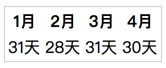
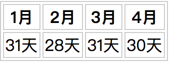
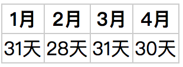
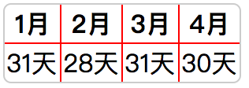

table
概述
table 用来定义表格，一个简单的 table 元素一般由一个或多个 tr、th 或 td 元素组成，其中 tr 元素定义表格行，th 元素定义表头，td 元素定义表格单元。而一个复杂的 table 可能包括 caption、col、colgroup、thead、tfoot 以及 tbody 元素。
简单的 table 演示这里就不做过多介绍了，这里主要介绍一些 table 使用技巧。
布局算法
表格布局算法也是一件比较纠结的事，其属性为 table-layout，取值有：
- auto：自动布局，列的宽度是由列单元格中没有折行的最宽的内容设定的
- fixed：固定布局，列的宽度取决于表格宽度、列宽度、表格边框宽度、单元格间距，而与单元格的内容无关，与自动布局相比，浏览器可以更快得对表格进行布局。
默认如果不设置table 及列的宽度，不论使用什么布局，table的宽度及列的宽度都由内容撑开。
而如果对 table 设置一个宽度，如“100%”，则列宽度存在以下几种情况：
- 没有任何列设置宽度，则列的宽度由其内容按比例分配
- 如果有某一列或几列设置了宽度，则剩余的由其内容按比例分配
- 如果每列都设置了宽度，每列的宽度加起来不等于table的宽度，则按照列设置的宽度比例重新分配宽度，而不是实际列设置的宽度
如果在设置 table 宽度的前提下，再设置其为固定布局，则列宽度存在以下几种情况：
- 没有任何列设置宽度，则宽度等分
- 如果有某一列或几列设置了宽度，则剩余的宽度等分
- 如果每列都设置了宽度，则按设置的比例分配宽度
表格边框
边框合并
默认 table 是没有边框的，但是一般为了表现效果，我们都会给 table 设置边框，以显示整齐罗列也方便查看。下面我们简单的说下如何给一个 table 设置边框。
<table>
<thead>
<tr>
<th>1月</th>
<th>2月</th>
<th>3月</th>
<th>4月</th>
</tr>
</thead>
<tbody>
<tr>
<td>31天</td>
<td>28天</td>
<td>31天</td>
<td>30天</td>
</tr>
</tbody>
</table>
首先我们给 table 设置一个 border，代码如下：
table {
border: 1px solid #ccc;
}
结果发现只有外面一圈有边框，而里面的内容没有 border 来隔开，效果图如下：

怎么只有外面一层有样式呢？这是因为我们只是使用 CSS 选中了 table 元素，而如果设置里面的线条应该是由 td、th 元素来设置的。现在我们接着设置 th 和 td 的 边框试试：
th, td {
border: 1px solid #ccc;
}
效果图如下：

这边框是有了，但是是两层的，于是我们需要重置 table 如下（边框间隙为 0，边框合并）：
table {
border: 1px solid #ccc;
border-spacing: 0; /* 边框间隙为0 */
border-collapse: collapse; /* 边框合并 */
}
这样就能达到我们最终的效果了，如下：

圆角边框
对于圆角来说，一般直接设置 border-radius 为某个值即可，如 5px。但是，我们把这个直接设置在 table 元素上，发现根本没效果，如下：
table {
border: 1px solid #ccc;
border-spacing: 0; /* 边框间隙为0 */
border-collapse: collapse; /* 边框合并 */
border-radius: 5px;
}
这是因为合并边框 border-collapse: collapse; 和 border-radius 是相冲的。
既然相冲了，那我们就又拆开吧，再拼成刚才的边框效果，样式如下：
.table-radius {
border: 1px solid #ccc; /* 整体外围边框 */
border-radius: 5px;
border-spacing: 0; /* 边框间隙为0 */
border-collapse: separate; /* 边框不和合并 */
overflow: hidden;
}
/* table 已经完成整体外围的边框，那里面格子的边框就由 th 和 td 来拼成*/
.table-radius th,
.table-radius td {
border-bottom: 1px solid #f00; /* 设置为红色，以区别 table 的边框 */
border-right: 1px solid #f00;
}
/* 最后一列单元格的右边框与最后一排单元格的下边框需要去掉 */
.table-radius th:last-child,
.table-radius td:last-child {
border-right: 0;
}
.table-radius tr:last-child td{
border-bottom: 0;
}
最后效果如下：

表格滚动
水平滚动
有些时候涉及到一些统计或财务的表格，那宽度超长，这个时候就需要滚动条来滚动显示。
当然表格本身是没有这个滚动功能的，这个时候我们可以再嵌套一个外层，设置外层 wrap 的 overflow-x: scroll;，然后就可以给 table 设置一个超长的宽度，显示数据了。
fixed thead
position 属性有个新值为 sticky，本来就是做这个的好帮手，可惜到目前为止其在 table 上 的表现不是很好。
所以目前还是得用 JS 来搞定，大概的思路是在 table 之外，再搞个只有 thead 的 table，设置定位为 fixed，然后再使用 JS 根据垂直滚动条滚动距离判断显示隐藏。
<!-- 单独的 thead，fixed 定位，默认隐藏，JS 来控制是否显示-->
<table class="table-fixed fixed--head">
<thead>
<tr>
<th>1月</th>
<th>2月</th>
<th>3月</th>
<th>4月</th>
</tr>
</thead>
</table>
<!-- 实际的 table -->
<table class="table-fixed">
<thead>
<tr>
<th>1月</th>
<th>2月</th>
<th>3月</th>
<th>4月</th>
</tr>
</thead>
<tbody>
<tr>
<td>31天</td>
<td>28天</td>
<td>31天</td>
<td>30天</td>
</tr>
</tbody>
</table>